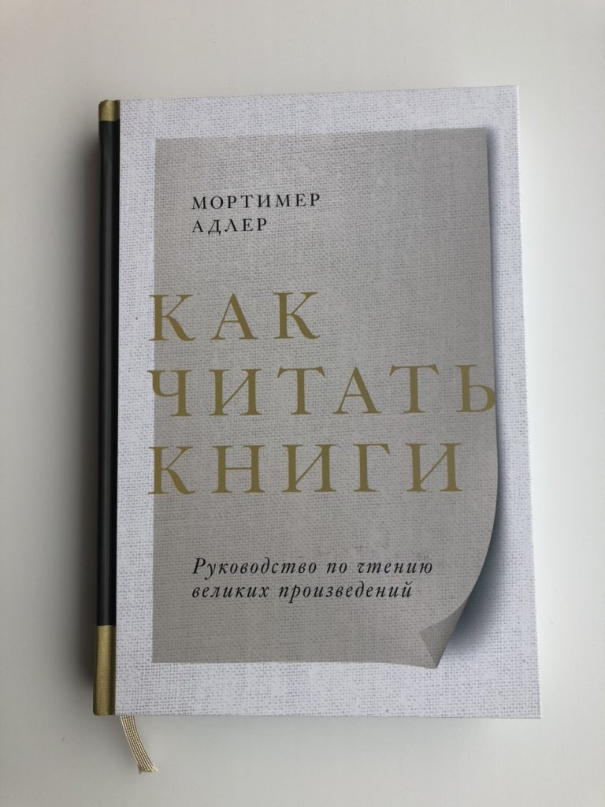

Как читать книги
Не ожидаю каких-то откровений, но хочется оставить заметки на полях. Книга написана ещё в 40-х философом и редактором «Энциклопедии Британника».

Родители понимают книгу лучше, когда читают своим детям. Нужно глубже вникнуть, что бы доходчиво разъяснять, если ребёнок спросит что-то.
После окончания школы мы прекращаем развитие в умении читать книги. Нет стимулов. По этому мы сами должны научиться создавать стимулы, отчитываясь перед собой о прочитанном. Это не коллекция или спорт.
И правда, вспоминаю, что в школе было интереснее читать. Нужно было рассказать учителю наполнение смыслом, что чувствуют герои, что автор имел ввиду. Приходилось много над этим думать, лишь бы не получить плохую оценку.
Помните в школе – чтение по ролям. Это наверное самое мощное погружение в текст книги было.
Высоко образованный человек читает книги совершенно на другом уровне.
Да, бывает, слушаешь как такой человек цитирует что-то из книги, можно подумать, что он сам это написал, на столько проникся сутью.
Умение читать, или писать книги — похоже на умение услышать, или отлично объяснять. Далеко не каждый это умеет.
Горжусь тем, что Россию считают читающей. То, что описывается в книге, а именно недостаток внимания к чтению в образовании и далее по жизни — дикий ужас. Даже не думал, что такое, уже тогда, в середине двадцатого века считалось нормой.
«У них (современных людей) сильно снижена способность сопротивляться ложным авторитетам.» ... «Выпускники остаются крайне уязвимыми и не могут противостоять внушению более сильных ораторов, поддаваясь склонности следовать своим низким порывам.»
Это написано в 40-х.
Важно уметь конспектировать новые знания полученные из книги.
Взял за правило. Теперь выписываю интересные мысли из каждой книги которую читаю.
Не пропускайте титульные страницы. В них автор с читателем пытается произвести «первую настройку». Читая без титульных страниц, рискуешь не понять книгу. Чтение превратиться в спорт, «прочитал», или коллекционирование «я читал».
Разгляди скелет книги, как рентген. Что бы потом в паре слов, или предложений сказать о чем книга. Не будь как студент «я знаю, но не вспомню».
Цель автора — «нарядить» скелет книги. Сюжетов в действительности не так много.
Никогда так не думал о смысле и контексте конкретных слов, которые автор вкладывает в текст. Найти их — все-равно, что найти «изюминку».
Книге нужно задавать вопросы, искать ответы, критиковать, спорить с автором.
Автор признаёт теологические книги самыми сложными для понимания. Там в каждом предложении множество смыслов. Вспоминаю как читал Библию, действительно часто зависал размышляя над предложением.
Список великих книг.
Великие #книги pic.twitter.com/Vzkhw3iFGQ
— Ваня Воищев (@voischev) March 22, 2020
Видно что автор очень кайфует от чтения. Что, через книгу желает передать нам с помощью структурированного подхода автора с огромным опытом. Главное для меня — конспекты, задавать вопросы, искать ответы, критиковать.
Понравилось, что книга возвращала в предыдущие главы объясняя, что в них происходило, на что автор бы обратил внимание и что изначально неопытный читатель мог упустить.